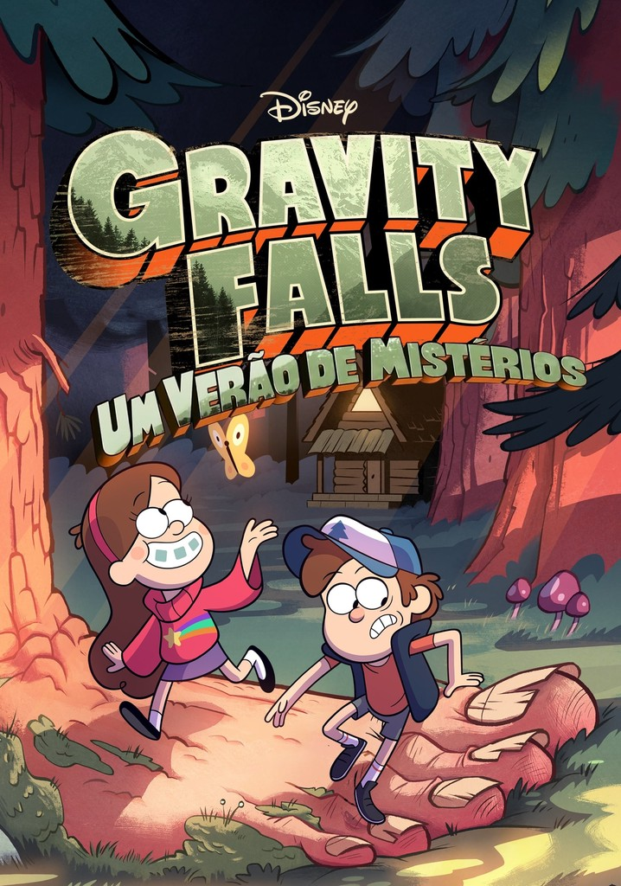

Desenho

Gravity Falls
Sinopse
Dipper e Mabel Pines são dois irmãos que são mandados para a loja do tio-avô Stan, em Gravity Falls, Oregon, para passarem lá o verão. Eles acham que as férias serão entediantes, mas quando Dipper encontra um estranho diário na floresta, eles descobrem que estranhos segredos estão fincados na cidade. Bem-vindos a Gravity Falls, a norte do normal e a oeste do esquisito.
Prêmios
- Emmy Awards: A série venceu duas vezes na categoria de Outstanding individual Achievement in Animation(2014 e 2015)
- Annie Awards: Considerado o "Oscar da Animação", a série venceu em categorias de peso:
- Melhor produção de TV animada para crianças: 2015
- Melhor direção em produção de TV: 2016
- Melhor dublagem em TV: 2013
- BAFTA Children's Awards: Venceu na categoria de Melhor Série Internacional em 2015
Conheça este desenho também: Avatar